Measuring Laser Beam Size#
This example shows how to measure the size of a laser beam along the propagation axis using DataLab:
Load all the images in a folder
Apply a threshold to the images
Extract the intensity profile along an horizontal line
Fit the intensity profile to a Gaussian function
Compute the full width at half maximum (FWHM) of intensity profile
Try another method: extract the radial intensity profile
Compute the FWHM of the radial intensity profile
Perform the same analysis on a stack of images and on the resulting profiles
Plot the beam size as a function of the position along the propagation axis
Load the images#
Note
The images used in this tutorial “TEM00_z_*.jpg” are available in the tutorial data
folder of DataLab’s installation directory
(<DataLab installation directory>/data/tutorials/).
Alternatively, you can download them from here
and extract to the folder of your choice.
First, we open DataLab and load the images. When working with multiple images, the most efficient approach is to use the “Open from directory…” option from the “File” menu (or click the button in the toolbar). This feature loads all images from a selected directory at once.

The “File > Open Image…” menu#

Select the folder containing the images and click “Choose”.#
The images are now loaded in the “Image panel”. You can zoom in and out by right-clicking and dragging the mouse vertically. To pan the image, use the middle mouse button while dragging.
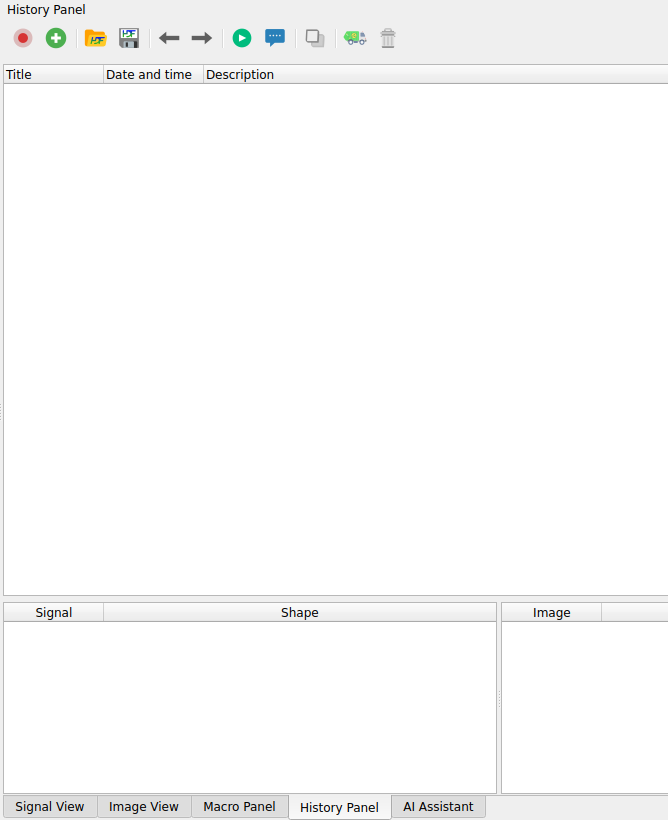
Zoom in and out with the right mouse button. Pan the image with the middle mouse button.#
Note
To view multiple images simultaneously, select the image group and choose “View images side-by-side” from the “View” menu.
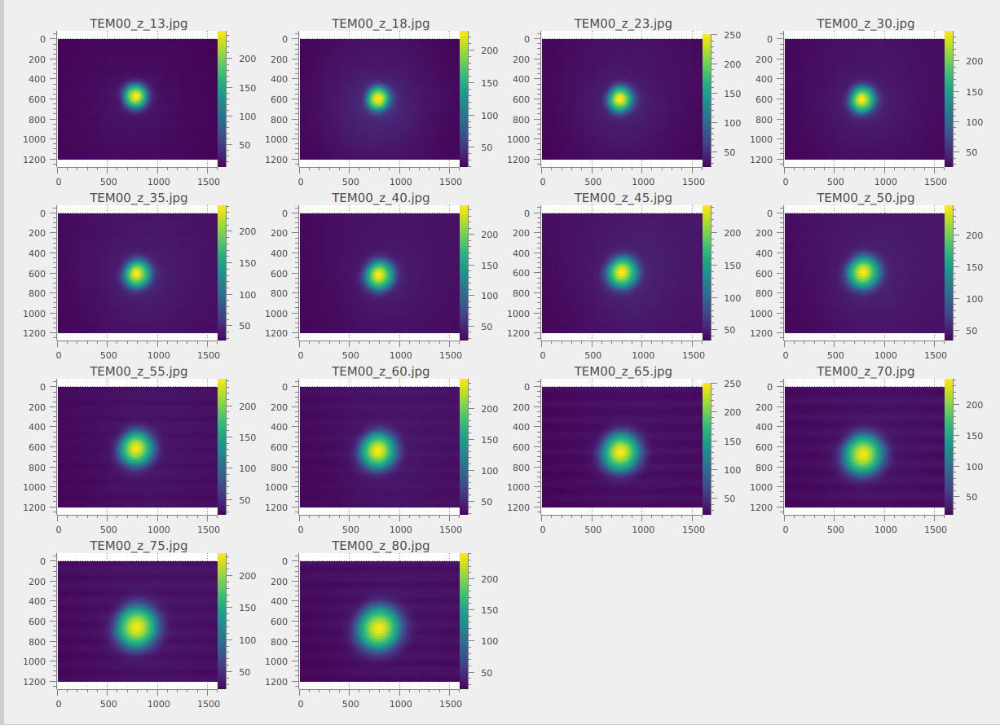
Viewing images side by side.#
Warning
The “Processing > Geometry” menu includes a “Distribute on a grid” option
 . This feature repositions the images by applying
offsets to their X and Y coordinates, arranging them in a grid layout
for side-by-side viewing. Note that this operation modifies the image
coordinates.
. This feature repositions the images by applying
offsets to their X and Y coordinates, arranging them in a grid layout
for side-by-side viewing. Note that this operation modifies the image
coordinates.
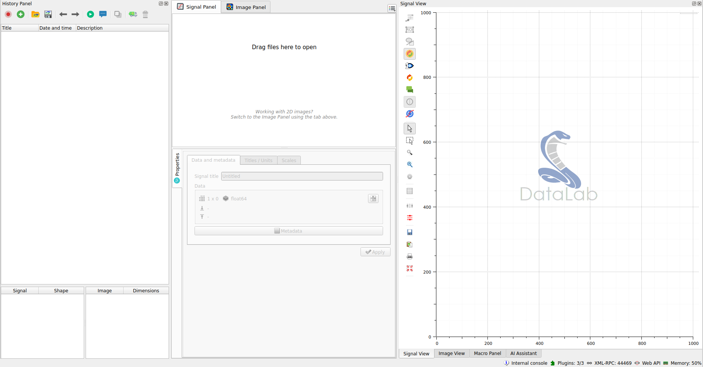
Images distributed on 4 columns grid.
To restore the original image positions, use the “Reset image positions” option
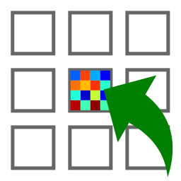
from the “Processing > Geometry” menu. Note that this operation sets all image origins to match the first image’s origin, which means any initial differences in image origins will be lost.Remove background noise#
When we select one of the images, we notice the presence of background noise, making it beneficial to apply a threshold to the images. Several methods are available to estimate the background noise level.
One approach utilizes the “Cross section” tool, which is provided by the
PlotPy <https://github.com/PlotPyStack/plotpy> library that DataLab uses for signal and image visualization.
Select an image from the “Image panel”, choose the corresponding image
in the visualization panel, and activate the “Cross section” tool  from
the vertical toolbar on the left side of the visualization panel. This
reveals that the background noise level is approximately 30 lsb.
from
the vertical toolbar on the left side of the visualization panel. This
reveals that the background noise level is approximately 30 lsb.

An image from the “Image panel”. To display the curve marker, select the profile curve and right-click to open the context menu, then choose “Markers > Bound to active item”.#
Another method for measuring background noise, also provided by PlotPy <https://github.com/PlotPyStack/plotpy>, involves using the “Image statistics” tool from the vertical toolbar on the left side of the visualization panel. This tool displays statistical information for a rectangular region that you define by dragging the mouse across the image. This analysis confirms that the background noise level is approximately 30 lsb.

The “Image statistics” tool in the vertical toolbar.#
Note that these tools are not persistent: the analysis results disappear when you select another image, they are intended to provide a fast insight on the image data.
Now we can clip the image at 35 lsb to remove the background noise using the “Processing > Level Adjustment > Clipping…” menu.

The two original and the clipped images are displayed side by side in the “Image view” (using the “Distribute on a grid” feature seen previously).#
Beam size measurement#
We can now compute the centroid of the beam—that is, the position of its center of mass. To do this, select “Analysis > Centroid” from the menu.
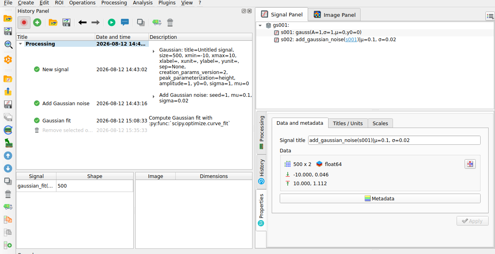
The centroid position is displayed on the image.#
Next, we can extract a line profile along the horizontal axis using “Analysis > Intensity profiles > Line profile”. Set the row position to the previously computed centroid position (i.e., 668) using the “Set Parameters” button. See Measuring Fabry-Perot fringes for more details on intensity profile extraction.
The intensity profile will be displayed in the “Signal panel”. We can then fit the profile to a Gaussian function using “Processing > Fitting > Gaussian fit”. Here we have selected both signals for comparison.
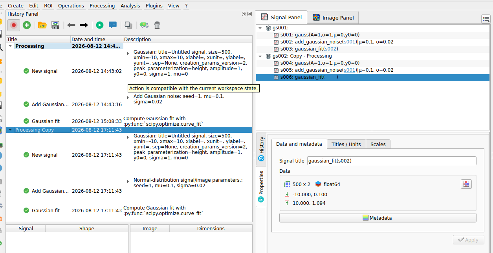
The intensity profile fitted to a Gaussian function. Here both signals are selected.#
Now let’s explore another method to compute the FWHM. Returning to the intensity profile signal, we can directly compute the FWHM using “Analysis > Full width at half maximum”. You can choose the estimation method based on your curve characteristics and optionally specify the interval to consider for this computation. Once complete, the results window will display the FWHM value, which is stored in the metadata and shown on the curve.
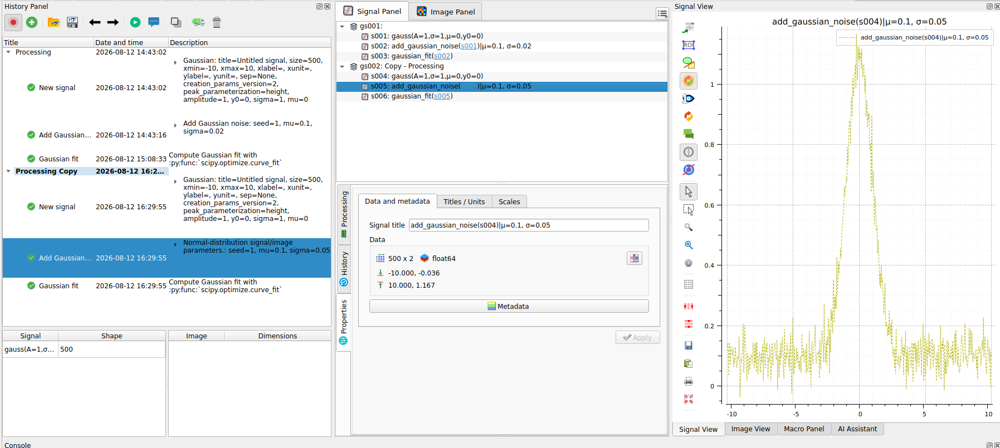
The popup that allows to choose the method to estimate the FWHM.#
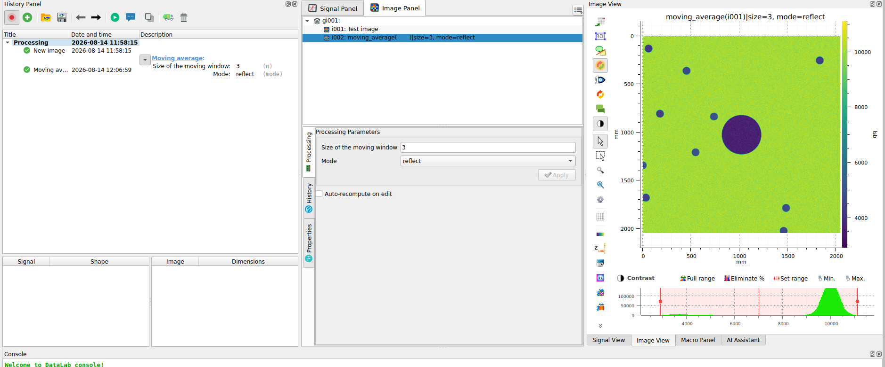
The FWHM result shown in the popup and over the curve.#
Let’s also try another method to measure the beam size by returning to the image.
From the “Image panel”, we can extract the radial intensity profile using “Analysis > Intensity profiles > Radial profile”. The radial intensity profile can be computed around the centroid position, the center of the image, or a user-defined position, depending on your data. For our data, which appears to have radial symmetry with a center not necessarily identical to the image center, the best option is the centroid position.

The options available for the Radial Profile computation.#

The radial intensity profile displayed in the “Signal panel”. It is smoother than the line profile, because it is computed from a larger number of pixels, thus averaging the noise.#
Apply these operations to all the images#
All the operations and computations performed on a single image can be applied to all images in the “Image panel”.
To begin, clean the “Signal panel” using “Edit > Delete all” or
the  button in the toolbar. Also remove intermediate results
from the “Image panel” by selecting the images created during prototyping
and deleting them individually using “Edit > Remove” or the button.
button in the toolbar. Also remove intermediate results
from the “Image panel” by selecting the images created during prototyping
and deleting them individually using “Edit > Remove” or the button.
Next, select all images in the “Image panel” (individually or by selecting the entire group “g001”).
Apply the clipping operation to all images, then extract the radial intensity profiles for all images (after selecting the entire group “g002”—it should be automatically selected if you had “g001” selected before applying the threshold).

The clipping applies to all images of the group.#
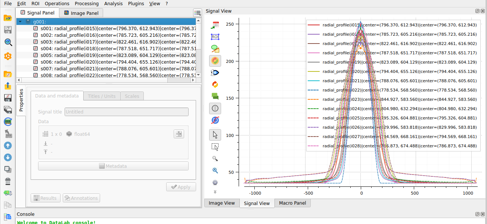
The “Signal panel” now contains all the radial intensity profiles.#
We can now compute the FWHM for all radial intensity profiles. The “Results” dialog will display the FWHM values for all profiles.

The “Results” dialog displays the FWHM values for all the profiles.#
Note
To display the analysis results again, select “Show results”
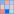
from the “Analysis” menu, or click the “Show results” button below the image list:
Finally, we can plot the beam size as a function of position along the propagation axis using the “Plot results” feature
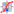
from the “Analysis” menu. This feature allows you to plot result datasets by selecting the x and y axes from the available result columns. Here, we will plot the FWHM values (L) as a function of the image index (Indices).
The “Plot results” feature in the “Analysis” menu.#
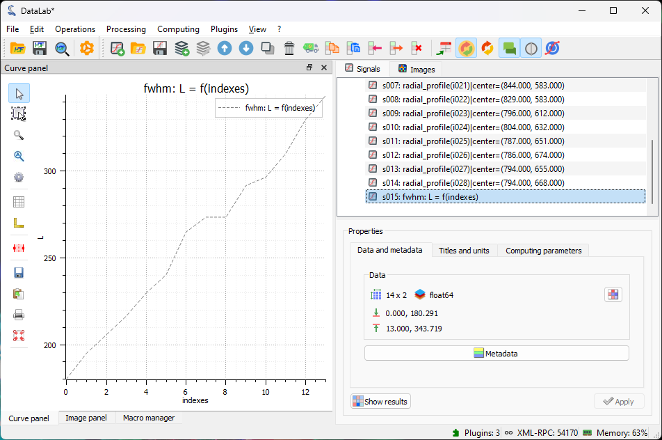
The beam size as a function of position along the propagation axis (the position is in arbitrary units—the image index).#
We can also calibrate the X and Y axes using “Processing > Linear calibration”. Here we set the X axis to the position in mm (entering the title and unit in the “Properties” group box) using the formula: \(X[\textrm{mm}] = 0.5 \cdot i + 10\) where \(i\) is the image index.

The calibrated beam size as a function of the position along the propagation axis (the position is now in mm).#
Finally, we can save the workspace to a file . The workspace contains all the images and signals that were loaded or processed in DataLab. It also contains the analysis results, the visualization settings (colormaps, contrast, etc.), the metadata, and the annotations.
If you want to load the workspace again, you can use the “File > Open HDF5 file…”
(or the  button in the toolbar) to load the whole workspace, or the
“File > Browse HDF5 file…” (or the button in the toolbar) to load
only a selection of data sets from the workspace.
button in the toolbar) to load the whole workspace, or the
“File > Browse HDF5 file…” (or the button in the toolbar) to load
only a selection of data sets from the workspace.